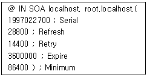
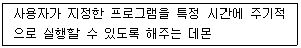
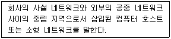

인터넷보안전문가-2급 (2018-04-08 기출문제)
1과목: 정보보호개론
1. 인터넷에서 일어날 수 있는 대표적인 보안사고 유형으로 어떤 침입 행위를 시도하기 위해 일정기간 위장한 상태를 유지하며, 코드 형태로 시스템의 특정 프로그램 내부에 존재 하는 것은?
- 논리 폭탄
- 웜
- 트로이 목마
- 잠입
(정답률: 82%)

2. 인증시스템인 Kerberos 에 대해 잘못 설명한 것은 ?
- MIT의 Athena 프로젝트에서 개발한 인증 시스템이다.
- kerberos는 사용자의 로그인 후 그 신원을 네트워크에 증명해 준다.
- 설치가 수월하다는 장점이 있다.
- rlogin, mail, NFS 등에 다양하게 보안 기능을 제공하고 있다.
(정답률: 59%)
3. 금융기관이나 인터넷 상에서 많은 사람들로부터 적은 금액을 조금씩 빼내고 피해자는 사건이 알려지기 전까지 전혀 눈치 채지 못하는 컴퓨터 사기수법은?
- Scavenging
- 논리 폭탄(Logic Bomb)
- 살라미(Salami) 기법
- 자료의 부정변개(Data Diddling)
(정답률: 81%)
4. 암호 프로토콜 서비스에 대한 설명 중 옳지 않은 것은?
- 비밀성 : 자료 유출의 방지
- 접근제어 : 프로그램 상의 오류가 발생하지 않도록 방지
- 무결성 : 메시지의 변조를 방지
- 부인봉쇄 : 송수신 사실의 부정 방지
(정답률: 72%)
5. IPSec 프로토콜에 대한 설명으로 옳지 않은 것은?
- 네트워크 계층인 IP 계층에서 보안 서비스를 제공하기 위한 보안 프로토콜이다.
- 기밀성 기능은 AH(Authentication Header)에 의하여 제공되고, 인증 서비스는 ESP(Encapsulating Security Payload) 에 의하여 제공된다.
- 보안 연계(Security Association)는 사용된 인증 및 암호 알고리즘, 사용된 암호키, 알고리즘의 동작 모드 그리고 키의 생명 주기 등을 포함한다.
- 키 관리는 수동으로 키를 입력하는 수동방법과 IKE 프로토콜을 이용한 자동방법이 존재한다.
(정답률: 60%)
6. 안전한 Linux Server를 구축하기 위한 방법으로 옳지 않은 것은?
- 불필요한 데몬을 제거한다.
- 불필요한 Setuid 프로그램을 제거한다.
- 시스템의 무결성을 주기적으로 검사한다.
- 무결성을 검사하기 위한 데이터베이스를 추후 액세스가 용이하게 검사할 시스템에 저장하는 것이 좋다.
(정답률: 77%)
7. DES 암호화 기술 기법에 대한 설명으로 잘못된 것은?
- 송, 수신자 모두 다른 키를 갖는다.
- 스마트카드 등에 이용한다.
- 암호화가 빠르다.
- 키 관리와 분배의 어려움이 있다.
(정답률: 50%)
8. 공개키 암호 알고리즘에 관한 설명 중 옳지 않은 것은?
- 공개키 암호화 방식은 암호화와 복호화하는데 비밀키와 공개키라는 서로 다른 두 개의 키를 사용한다.
- 공개키는 일반인에게 공개하고 비밀키는 오직 자신만이 알도록 한다.
- 데이터 암호화 및 수신된 데이터의 부인 봉쇄 그리고 전자 서명에 있어서 효율적이다.
- 비공개키 암호 알고리즘보다 암호화와 복호화 속도가 빠르고 키의 길이가 대칭키 알고리즘보다 작다.
(정답률: 61%)
9. 인증 서비스를 제공하기 위한 공개키 인증서(Public-key Certificate)에 포함되어 있지 않은 내용은?
- 가입자의 이름
- 가입자의 전자서명 검증키(공개키)
- 인증서의 유효기간
- 가입자의 거주 주소, 전화번호 등의 개인정보
(정답률: 81%)
10. 공격 유형 중 마치 다른 송신자로부터 정보가 수신된 것처럼 꾸미는 것으로, 시스템에 불법적으로 접근하여 오류의 정보를 정확한 정보인 것처럼 속이는 행위를 뜻하는 것은?
- 차단(Interruption)
- 위조(Fabrication)
- 변조(Modification)
- 가로채기(Interception)
(정답률: 65%)
2과목: 운영체제
11. Linux에서 특정한 파일을 찾고자 할 때 사용하는 명령어는?
- mv
- cp
- find
- file
(정답률: 76%)
12. 프로세스의 상태를 확인하고자 할 때 사용하는 명령어는?
- ps
- w
- at
- cron
(정답률: 72%)
13. 자신의 Linux 서버에 네임서버 운영을 위한 Bind Package가 설치되어 있는지를 확인해 보기 위한 올바른 명령어는?
- rpm -qa l grep bind
- rpm -ap l grep bind
- rpm -qe l grep bind
- rpm -ql l grep bind
(정답률: 56%)
14. Linux 시스템에서 '-rwxr-xr-x' 퍼미션을 나타내는 숫자는?
- 755
- 777
- 766
- 764
(정답률: 71%)
15. Linux 콘솔 상에서 네트워크 어댑터 'eth0'을 '192.168.1.1' 이라는 주소로 사용하고 싶을 때 올바른 명령은?
- ifconfig eth0 192.168.1.1 activate
- ifconfig eth0 192.168.1.1 deactivate
- ifconfig eth0 192.168.1.1 up
- ifconfig eth0 192.168.1.1 down
(정답률: 74%)
16. 이미 내린 shutdown 명령을 취소하기 위한 명령은?
- shutdown –r
- shutdown -h
- cancel
- shutdown –c
(정답률: 72%)
17. 아래는 DNS Zone 파일의 SOA 레코드 내용이다. SOA 레코드의 내용을 보면 5 개의 숫자 값을 갖는데, 그 중 두 번째 값인 Refresh 값의 역할은?

- Primary 서버와 Secondary 서버가 동기화 하게 되는 기간이다.
- Zone 내용이 다른 DNS 서버의 cache 안에서 살아남을 기간이다.
- Zone 내용이 다른 DNS 서버 안에서 Refresh 될 기간이다.
- Zone 내용이 Zone 파일을 갖고 있는 서버 내에서 자동 Refresh 되는 기간이다.
(정답률: 61%)
18. 사용자 그룹을 생성하기 위해 사용되는 Linux 명령어는?
- groups
- mkgroup
- groupstart
- groupadd
(정답률: 59%)
19. Linux 시스템 명령어 중 디스크의 용량을 확인하는 명령어는?
- cd
- df
- cp
- mount
(정답률: 73%)
20. vi 에디터 사용 중 명령 모드로 변환할 때 사용하는 키는?
- Esc
- Enter
- Alt
- Ctrl
(정답률: 67%)
21. Windows Server에서 감사정책을 설정하고 기록을 남길 수 있는 그룹은?
- Administrators
- Security Operators
- Backup Operators
- Audit Operators
(정답률: 73%)
22. Linux 시스템에서 네트워크 환경 설정 및 시스템 초기화에 연관된 파일들을 가지는 디렉터리는?
- /root
- /home
- /bin
- /etc
(정답률: 56%)
23. 아파치 웹서버 운영시 서비스에 필요한 여러 기능들을 제어하기 위하여 설정해야 하는 파일은?
- httpd.conf
- htdocs.conf
- index.php
- index.cgi
(정답률: 72%)
24. 파일 시스템의 기능으로 옳지 않은 것은?
- 여러 종류의 접근 제어 방법을 제공
- 파일의 생성, 변경, 제거
- 파일의 무결성과 보안을 유지할 수 있는 방안 제공
- 네트워크 제어
(정답률: 72%)
25. 이메일에서 주로 사용하는 프로토콜로 옳지 않은 것은?
- SMTP
- POP3
- IMAP
- SNMP
(정답률: 69%)
26. Linux 시스템에서 현재 사용자가 수행되는 백그라운드 작업을 출력하는 명령어는?
- jobs
- kill
- ps
- top
(정답률: 64%)
27. DHCP(Dynamic Host Configuration Protocol) 서버에서 이용할 수 있는 IP Address 할당 방법 중에서 DHCP 서버가 관리하는 IP 풀(Pool)에서 일정기간 동안 IP Address를 빌려주는 방식은?
- 수동 할당
- 자동 할당
- 분할 할당
- 동적 할당
(정답률: 71%)
28. 커널의 대표적인 기능으로 옳지 않은 것은?
- 파일 관리
- 기억장치 관리
- 명령어 처리
- 프로세스 관리
(정답률: 62%)
29. 다음이 설명하는 Linux 시스템의 데몬은?

- crond
- atd
- gpm
- amd
(정답률: 68%)
30. 현재 Linux 서버에 접속된 모든 사용자에게 메시지를 전송하는 명령은?
- wall
- message
- broadcast
- bc
(정답률: 60%)
3과목: 네트워크
31. ICMP의 메시지 유형으로 옳지 않은 것은?
- Destination Unreachable
- Time Exceeded
- Echo Reply
- Echo Research
(정답률: 37%)
32. 다음은 TCP/IP의 Transport Layer에 관한 설명으로 옳지 않은 것은?
- TCP는 흐름제어, 에러제어를 통하여 신뢰성 있는 통신을 보장한다.
- UDP는 신뢰성 제공은 못하지만, TCP에 비해 헤더 사이즈가 작다.
- TCP는 3-way handshake를 이용하여 세션을 성립한 다음 데이터를 주고받는다.
- UDP는 상위 계층을 식별하기 위하여 Protocol Field를 사용한다.
(정답률: 58%)
33. 오류검출 방식인 ARQ 방식 중에서 일정한 크기 단위로 연속해서 프레임을 전송하고 수신측에서 오류가 발견된 프레임에 대하여 재전송 요청이 있을 경우 잘못된 프레임 이후를 다시 전송하는 방법은?(오류 신고가 접수된 문제입니다. 반드시 정답과 해설을 확인하시기 바랍니다.)
- 정지-대기 ARQ
- Go-back-N ARQ
- Selective Repeat ARQ
- 적응적 ARQ
(정답률: 54%)
34. OSI 7 Layer에서 사용되는 계층이 다른 프로토콜은?
- FTP
- SMTP
- HTTP
- IP
(정답률: 68%)
35. TCP/IP 프로토콜을 이용해서 서버와 클라이언트가 통신을 할 때, Netstat 명령을 이용해 현재의 접속 상태를 확인할 수 있다. 클라이언트와 서버가 현재 올바르게 연결되어 통신 중인 경우 Netstat으로 상태를 확인하였을 때 나타나는 메시지는?
- SYN_PCVD
- ESTABLISHED
- CLOSE_WAIT
- CONNECTED
(정답률: 65%)
36. 네트워크 인터페이스 카드는 OSI 7 Layer 중 어느 계층에서 동작하는가?
- 물리 계층
- 세션 계층
- 네트워크 계층
- 트랜스포트 계층
(정답률: 73%)
37. IP Address에 대한 설명으로 옳지 않은 것은?
- A Class는 Network Address bit의 8bit 중 선두 1bit는 반드시 0 이어야 한다.
- B Class는 Network Address bit의 8bit 중 선두 2bit는 반드시 10 이어야 한다.
- C Class는 Network Address bit의 8bit 중 선두 3bit는 반드시 110 이어야 한다.
- D Class는 Network Address bit의 8bit 중 선두 4bit는 반드시 1111 이어야 한다.
(정답률: 69%)
38. OSI 7 Layer에서 암호/복호, 인증, 압축 등의 기능이 수행되는 계층은?
- Transport Layer
- Datalink Layer
- Presentation Layer
- Application Layer
(정답률: 70%)
39. 전통적인 Class의 Prefix(Network Portion)의 길이를 확장하여 할당받은 하나의 Network를 보다 여러 개의 Network로 나누어 관리하는 것을 무엇이라 하는가?
- Subnetting
- Supernetting
- CIDR
- Divclassing
(정답률: 70%)
40. 각 허브에 연결된 노드가 세그먼트와 같은 효과를 갖도록 해주는 장비로서 트리 구조로 연결된 각 노드가 동시에 데이터를 전송할 수 있게 해주며, 규정된 네트워크 속도를 공유하지 않고 각 노드에게 규정 속도를 보장해 줄 수 있는 네트워크 장비는?
- Switching Hub
- Router
- Brouter
- Gateway
(정답률: 67%)
41. 프로토콜의 기능 중 전송을 받는 개체에서 발송지로부터 오는 데이터의 양이나 속도를 제한하는 기능은?
- 흐름 제어
- 에러 제어
- 순서 제어
- 접속 제어
(정답률: 80%)
42. 홉 카운팅 기능을 제공하는 라우팅 프로토콜은?
- SNMP
- RIP
- SMB
- OSPF
(정답률: 68%)
43. 다음 중 디지털 변조로 옳지 않은 것은?
- ASK
- FSK
- PM
- QAM
(정답률: 54%)
44. 자신의 물리 주소(MAC Address)를 알고 있으나 IP Address를 모르는 디스크가 없는 호스트를 위한 프로토콜로서, 자신의 IP Address를 모르는 호스트가 요청 메시지를 브로드 캐스팅하고, 이의 관계를 알고 있는 서버가 응답 메시지에 IP 주소를 되돌려 주는 프로토콜은?
- ARP(Address Resolution Protocol)
- RARP(Reverse Address Resolution Protocol)
- ICMP(Internet Control Message Protocol)
- IGMP(Internet Group Management Protocol)
(정답률: 67%)
45. TCP는 연결 설정과정에서 3-way handshaking 기법을 이용하여 호스트 대 호스트의 연결을 초기화 한다. 다음 중 호스트 대 호스트 연결을 초기화할 때 사용되는 패킷은?
- SYN
- RST
- FIN
- URG
(정답률: 52%)
4과목: 보안
46. Linux 시스템에서 여러 가지 일어나고 있는 상황을 기록해 두는 데몬으로, 시스템에 이상이 발생했을 경우 해당 내용을 파일에 기록하거나 다른 호스트로 전송하는 데몬은?
- syslogd
- xntpd
- inet
- auth
(정답률: 70%)
47. Linux 명령어 중 '/var/log/utmp와 /var/log/wtmp'를 모두 참조하는 명령어는?
- lastlog
- last
- who
- netstat
(정답률: 59%)
48. PGP(Pretty Good Privacy)에서 지원하지 못하는 기능은?
- 메시지 인증
- 수신 부인방지
- 사용자 인증
- 송신 부인방지
(정답률: 57%)
49. 방화벽의 주요 기능으로 옳지 않은 것은?
- 접근제어
- 사용자 인증
- 로깅
- 프라이버시 보호
(정답률: 68%)
50. HTTP Session Hijacking 공격 방법으로 옳지 않은 것은?
- 공격자는 Session을 가로 채기 위해 웹 서버와 웹 클라이언트의 트래픽을 직접적으로 Sniffing하는 방법
- 웹 서버 상에 공격 코드를 삽입하고 사용자의 실행을 기다리는 방법
- Session ID 값을 무작위 추측 대입(Brute-Force Guessing)함으로써 공격하는 방법
- 웹 서버의 서비스를 중단 시키고, 공격자가 서버에 도착하는 모든 패킷을 가로채는 방법
(정답률: 53%)
51. SYN 플러딩 공격에 대한 설명으로 올바른 것은?
- TCP 프로토콜의 3-way handshaking 방식을 이용한 접속의 문제점을 이용하는 방식으로, IP 스푸핑 공격을 위한 사전 준비 단계에서 이용되는 공격이며, 서버가 클라이언트로부터 과도한 접속 요구를 받아 이를 처리하기 위한 구조인 백로그(backlog)가 한계에 이르러 다른 클라이언트로부터 오는 새로운 연결 요청을 받을 수 없게 하는 공격이다.
- 함수의 지역 변수에 매개변수를 복사할 때 길이를 확인하지 않은 특성을 이용하는 공격 방법이다.
- 네트워크에 연결된 호스트들의 이용 가능한 서비스와 포트를 조사하여 보안 취약점을 조사하기 위한 공격방법이다.
- 패킷을 전송할 때 암호화하여 전송하는 보안 도구이다.
(정답률: 70%)
52. 다음은 어떤 보안 도구를 의미하는가?

- IDS
- DMZ
- Firewall
- VPN
(정답률: 64%)
53. Tripwire의 특징으로 옳지 않은 것은?
- 어셈블리어로 작성되어 거의 모든 플랫폼에서 정상적으로 컴파일 된다.
- 설치 전에 네트워크를 위한 전자서명 값의 데이터베이스를 구축할 수 있다.
- 데이터베이스의 승인되지 않은 변경으로부터 보호를 한다.
- 매크로 처리언어로 특정작업을 자동으로 수행할 수 있다.
(정답률: 46%)
54. SSH(Secure Shell)에 대한 설명으로 옳지 않은 것은?
- 안전하지 못한 네트워크에서 안전하게 통신할 수 있는 기능과 강력한 인증방법을 제공한다.
- 문자를 암호화하여 IP Spoofing, DNS Spoofing으로부터 보호할 수 있다.
- 쌍방 간 인증을 위해 Skipjack 알고리즘이 이용된다.
- 네트워크의 외부 컴퓨터에 로그인 할 수 있고 원격 시스템에서 명령을 실행하고 다른 시스템으로 파일을 복사할 수 있도록 해주는 프로그램이다.
(정답률: 58%)
55. Linux에서 root만 로그인하고 나머지 사용자 계정은 로그인이 불가능하게 하는 설정 파일은?
- /etc/nologin
- /etc/hosts.allow
- /etc/hosts.deny
- /bin/more
(정답률: 52%)
56. Router에서는 IP 및 패킷을 필터링 하기 위한 Access Control List를 사용할 때 주의사항으로 올바른 것은?
- 라우터에 연산 부담을 덜기 위하여 상세하고, 큰 용량의 ACL을 유지하여야 한다.
- 시스코 라우터는 입력 트래픽 보다 출력 트래픽에 ACL을 적용하는 것이 효율 적이다.
- 라우터 트래픽 감소를 위해 Netflow을 함께 작동 시킨다.
- ACL을 이용한 출력 트래픽 필터링은 위조된 IP가 유출되는 것을 방지한다.
(정답률: 39%)
57. 침입차단시스템에 대한 설명 중 옳지 않은 것은?
- 침입차단시스템은 내부 사설망을 외부의 인터넷으로부터 보호하기 위한 장치이다.
- 패킷 필터링 침입차단시스템은 주로 발신지와 목적지 IP Address와 발신지와 목적지 포트 번호를 바탕으로 IP 패킷을 필터링한다.
- 침입차단시스템의 유형은 패킷 필터링 라우터, 응용 레벨 게이트웨이, 그리고 회선 레벨 게이트웨이 방법 등이 있다.
- 침입차단시스템은 네트워크 사용에 대한 로깅과 통계자료를 제공할 수 없다.
(정답률: 63%)
58. L2 스위칭 공격에 대한 설명으로 옳지 않은 것은?
- 하드웨어에 대한 공격과 트래픽 흐름을 변경하는 네트워크 공격으로 분류할 수 있다.
- MAC Flooding, ARP Spoofing, Spanning Tree Attack 등이 있다.
- 공격이 진행되고 있는 상태에서 스위치와 연결된 정상적인 호스트가 통신할 때, 스위치의 MAC 정보에는 영향을 미치지 않는다.
- MAC Flooding은 한 포트에서 수 천 개의 호스트가 스위치와 연결되어 있는 것으로 보이지만 실제는 변조된 MAC 정보를 공격 호스트에서 발생시키는 것이다.
(정답률: 52%)
59. 근거리통신망에서 NIC(Network Interface Card) 카드를 Promiscuous 모드로 설정하여 지나가는 프레임을 모두 읽음으로써 다른 사람의 정보를 가로채기 위한 공격 방법은?
- 스니핑
- IP 스푸핑
- TCP wrapper
- ipchain
(정답률: 57%)
60. 웹 해킹의 한 종류인 SQL Injection 공격은 조작된 SQL 질의를 통하여 공격자가 원하는 SQL구문을 실행하는 기법이다. 이를 예방하기 위한 방법으로 옳지 않은 것은?
- 에러 감시와 분석을 위해 SQL 에러 메시지를 웹상에 상세히 출력한다.
- 입력 값에 대한 검증을 실시한다.
- SQL 구문에 영향을 미칠 수 있는 입력 값은 적절하게 변환한다.
- SQL 및 스크립트 언어 인터프리터를 최신 버전으로 유지한다.
(정답률: 69%)